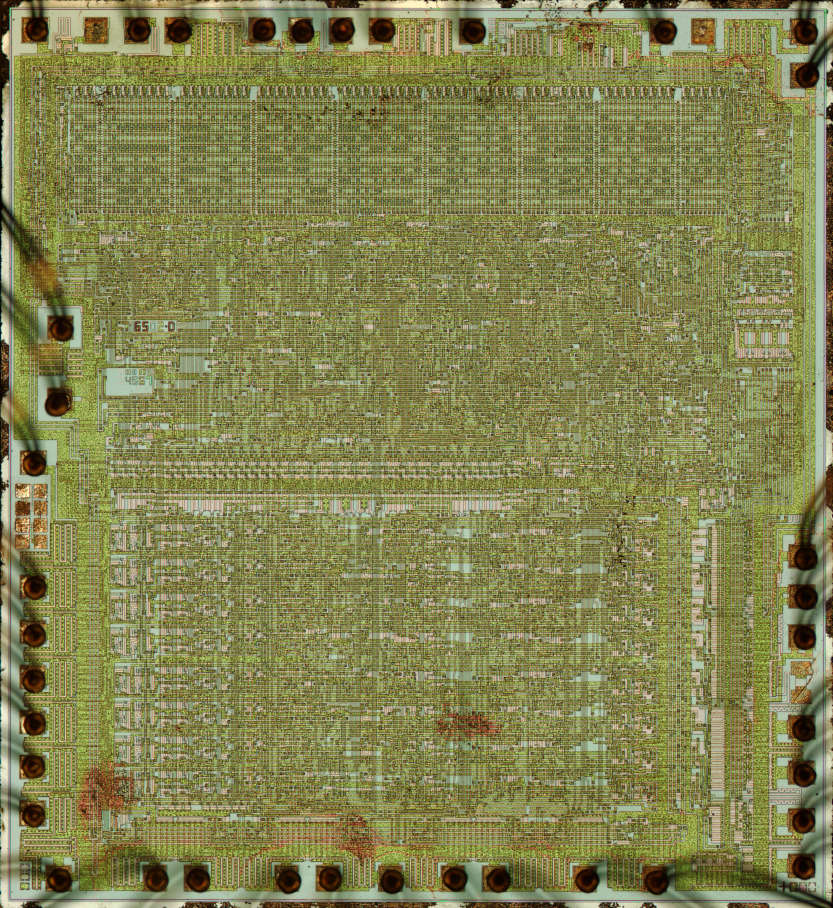
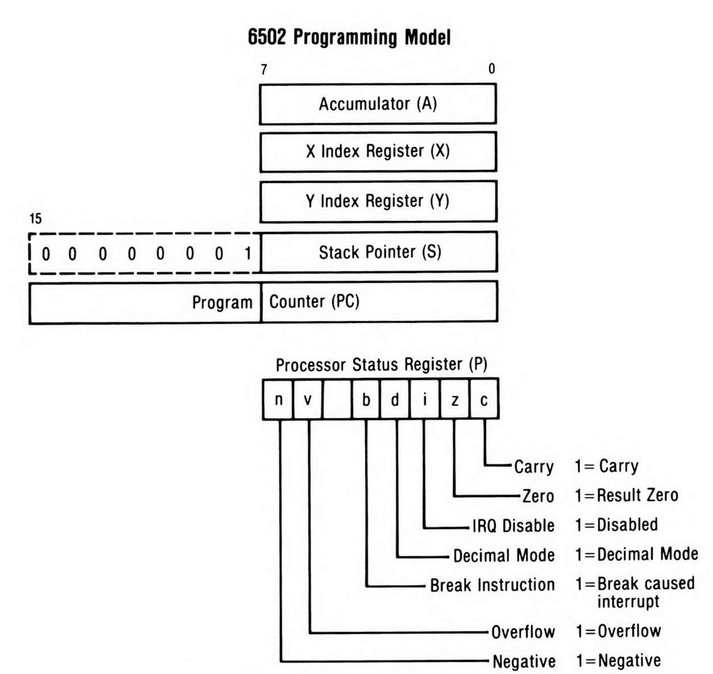

The 6502 is an 8-bit processor, which generally means all calculations on the machine are done in one-byte (8-bit) chunks. For instance, if the programmer wanted to move a large block of memory to another memory location, they'd have to do so moving one byte from the source to the destination, and then another byte, and so on.

The processor has an 8-bit accumulator register, 2 8-bit index registers X and Y, an 8-bit stack pointer, and a 16-bit program counter. Most of the calculations and arithmetic occur using the accumulator. The index registers are also very helpful for simple memory movement and counters for things like loops.
